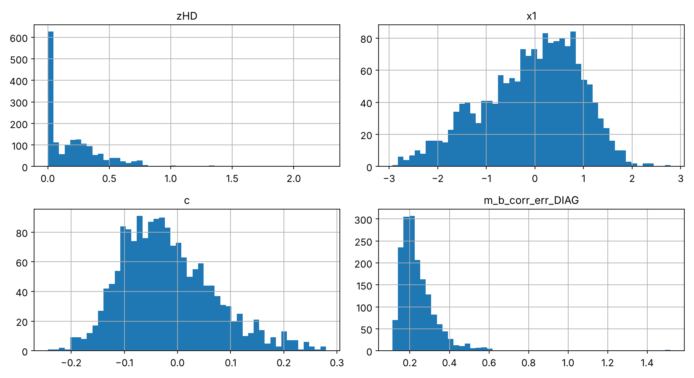
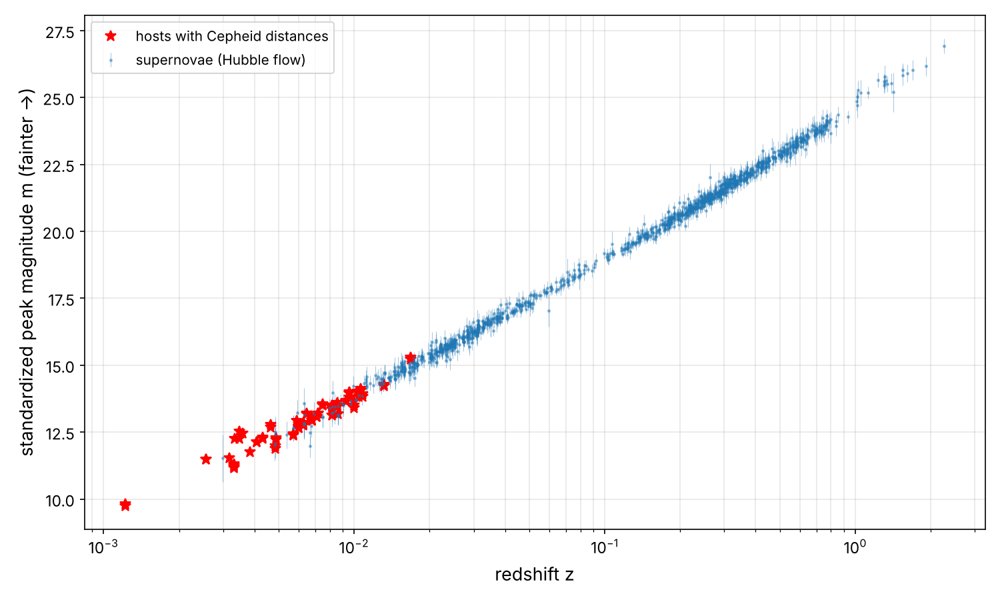
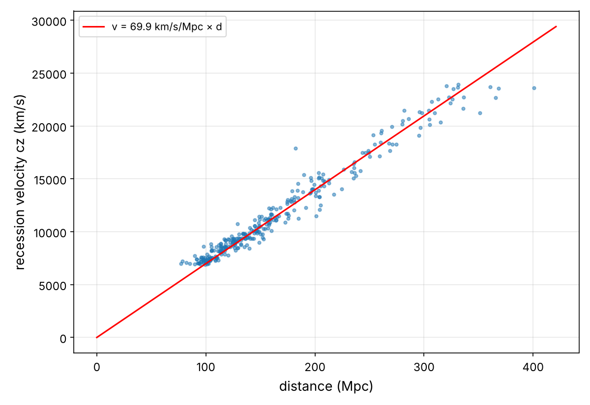
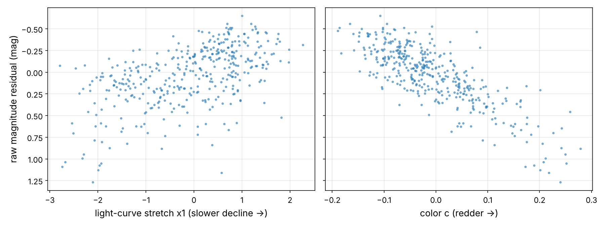
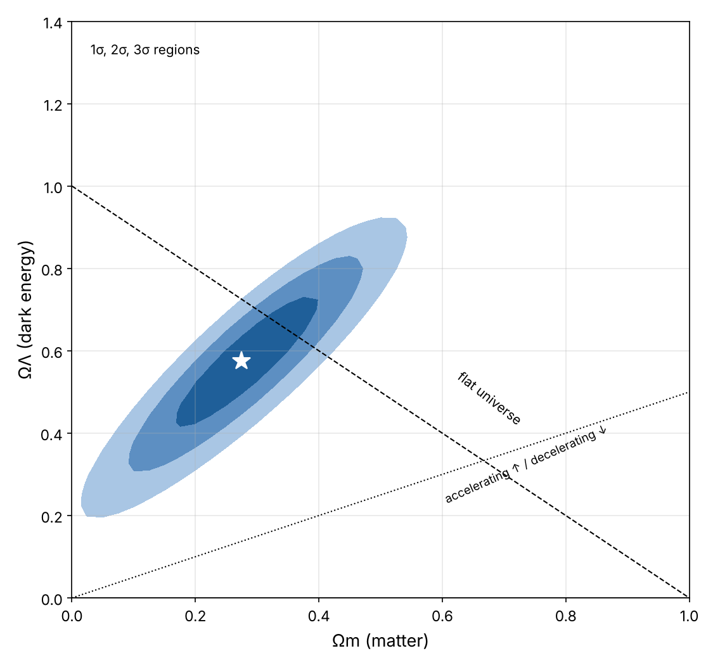
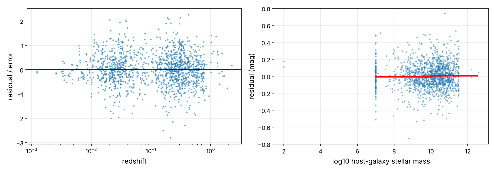

Discovering Dark Energy:
The Accelerating Universe
In this chapter you will go through a fourth project end to end, pretending to be a recently hired data scientist on a supernova cosmology team in 1998. Everybody "knows" that the expansion of the Universe must be slowing down: gravity pulls everything back together, so the only question is how much. Your team has spent years measuring exploding stars billions of light-years away to answer exactly that. Your job is to fit the data. What you are about to find won your predecessors the 2011 Nobel Prize in Physics.1 Here are the main steps you will go through:
- Look at the big picture.
- Get the data.
- Discover and visualize the data to gain insights.
- Prepare the data for Machine Learning algorithms.
- Select a model and train it.
- Fine-tune your model.
- Present your solution.
- Launch, monitor, and maintain your system.
Along the way you will rediscover Hubble's law, build a "standard candle" with a two-feature linear regression, use the distance ladder to measure the expansion rate of the Universe, and compare five different universes with cross-validation and a grid search. Finally, you will run into one of the biggest open problems in physics today: the Hubble tension.
Working with Real Data
| Dataset | Kind | Content |
|---|---|---|
| Pantheon+ (Scolnic et al. 2022, Brout et al. 2022), with SH0ES Cepheid calibrators (Riess et al. 2022) | real telescope data | 1,701 light curves of 1,543 Type Ia supernovae from 18 surveys, redshifts 0.001–2.26, light-curve parameters, standardized magnitudes, and their full 1701 × 1701 covariance matrix |
This is the dataset of the Pantheon+ analysis, published openly on GitHub by its authors. Each row summarizes the light curve of one supernova, as measured by one survey: how bright it got, how fast it faded, what color it was, and the redshift of its host galaxy. These are processed measurements, not raw pixels, but they are real observations from telescopes across the world and in space. The Hubble Space Telescope observed the most distant ones.
The notebook dark_energy_project.ipynb runs every line of code in this chapter in under a minute. The data and a compressed copy of the covariance matrix are cached in datasets/pantheon_plus/.
Look at the Big Picture
Frame the Problem
The objective is to measure the expansion history of the Universe: its current rate \(H_0\), and whether it is speeding up or slowing down (the deceleration parameter \(q_0\)). These numbers set the age and the fate of the Universe. They also feed every other cosmological analysis, which are the downstream components of the pipeline.
Framing: it is supervised regression, with redshift as input and standardized magnitude as target. It is model-based learning, where a few physical parameters \((M, H_0, \Omega_m, \Omega_\Lambda, w)\) define each candidate model. The main question is model selection: which kind of universe do we live in? There are also two kinds of instances. For the 77 calibrator light curves, the target is predicted from a Cepheid distance. For the Hubble-flow supernovae, it is predicted from cosmology. Training on both together is what lets the model learn \(M\) and \(H_0\) at the same time: a small multi-task setup.
Select a Performance Measure
As in Chapter 2, every measurement comes with an uncertainty \(\sigma^{(i)}\), so we use the chi-square, the sum of squared pulls (Equation 2-3). There is a twist we will meet later. The supernova errors are correlated: they share calibrations, dust corrections and survey systematics. The proper generalization uses the covariance matrix \(\mathbf{C}\) of the targets:
With a diagonal \(\mathbf{C}\), this is the familiar weighted sum of squares. Minimizing it is called generalized least squares. To compare models with different numbers of parameters, we use \(\Delta\chi^2\) and cross-validation.
Check the Assumptions
- Standardizable candles. The peak luminosity is the same for all Type Ia supernovae after correcting for light-curve shape and color. We will check this ourselves.
- No evolution. Supernovae billions of years ago behave like nearby ones. That's hard to check, so it's a known risk.
- Peculiar velocities. Nearby galaxies have random motions of a few hundred km/s on top of the expansion, which matters below \(z \approx 0.01\)–0.02. We will cut those supernovae from the cosmology fit, except the calibrators.
- One instance is not one supernova. The same supernova observed by two surveys appears twice. The two rows are not independent, and this matters for splitting the data.
Get the Data
Same workspace as before (pip install -U jupyter numpy pandas matplotlib scipy scikit-learn).
# Python ≥3.8 is required
import sys
assert sys.version_info >= (3, 8)
# Scikit-Learn ≥1.0 is required
import sklearn
assert sklearn.__version__ >= "1.0"
# Common imports
import os
import numpy as np
import pandas as pd
# To make this notebook's output stable across runs
np.random.seed(42)
# To plot pretty figures
import matplotlib as mpl
import matplotlib.pyplot as plt
mpl.rc('axes', labelsize=13)
mpl.rc('xtick', labelsize=11)
mpl.rc('ytick', labelsize=11)
# Where to save the figures
PROJECT_ROOT_DIR = "."
IMAGES_PATH = os.path.join(PROJECT_ROOT_DIR, "images")
os.makedirs(IMAGES_PATH, exist_ok=True)
def save_fig(fig_id, tight_layout=True, fig_extension="png", resolution=150):
path = os.path.join(IMAGES_PATH, fig_id + "." + fig_extension)
print("Saving figure", fig_id)
if tight_layout:
plt.tight_layout()
plt.savefig(path, format=fig_extension, dpi=resolution)
Download the Data
The table is a whitespace-separated text file. The covariance matrix is 33 MB of text, so we store only its upper triangle in compressed binary form (5 MB):
import urllib.request
DOWNLOAD_ROOT = ("https://raw.githubusercontent.com/PantheonPlusSH0ES/DataRelease/main/"
"Pantheon%2B_Data/4_DISTANCES_AND_COVAR/")
PANTHEON_PATH = os.path.join("datasets", "pantheon_plus")
def fetch_pantheon_data(root=DOWNLOAD_ROOT, path=PANTHEON_PATH):
os.makedirs(path, exist_ok=True)
dat_path = os.path.join(path, "Pantheon+SH0ES.dat")
if not os.path.exists(dat_path):
urllib.request.urlretrieve(root + "Pantheon%2BSH0ES.dat", dat_path)
cov_path = os.path.join(path, "Pantheon+SH0ES_STAT+SYS_cov_upper.npz")
if not os.path.exists(cov_path): # 33 MB of text -> 5 MB compressed
raw = urllib.request.urlopen(root + "Pantheon%2BSH0ES_STAT%2BSYS.cov").read().decode()
values = np.array(raw.split()[1:], dtype=float)
n = int(np.sqrt(values.size))
cov = values.reshape(n, n)
cov = (cov + cov.T) / 2 # remove rounding asymmetries
np.savez_compressed(cov_path, upper=cov[np.triu_indices(n)].astype(np.float32))
return dat_path, cov_path
def load_pantheon_data(path=PANTHEON_PATH):
dat_path, cov_path = fetch_pantheon_data(path=path)
data = pd.read_csv(dat_path, sep=r"\s+")
upper = np.load(cov_path)["upper"].astype(float)
n = len(data)
cov = np.zeros((n, n))
cov[np.triu_indices(n)] = upper
cov = cov + cov.T - np.diag(np.diag(cov))
return data, cov
sne, sne_cov = load_pantheon_data()
sne[["CID", "IDSURVEY", "zHD", "zHEL", "mB", "x1", "c", "m_b_corr",
"m_b_corr_err_DIAG", "CEPH_DIST", "IS_CALIBRATOR"]].head()
| CID | IDSURVEY | zHD | zHEL | mB | x1 | c | m_b_corr | m_b_corr_err_DIAG | CEPH_DIST | IS_CALIBRATOR | |
|---|---|---|---|---|---|---|---|---|---|---|---|
| 0 | 2011fe | 51 | 0.00122 | 0.00082 | 9.58436 | -0.548188 | -0.107600 | 9.74571 | 1.516210 | 29.1770 | 1 |
| 1 | 2011fe | 56 | 0.00122 | 0.00082 | 9.78448 | -0.380481 | -0.032895 | 9.80286 | 1.517230 | 29.1770 | 1 |
| 2 | 2012cg | 51 | 0.00256 | 0.00144 | 11.81610 | 0.491960 | 0.100730 | 11.47030 | 0.781906 | 30.8433 | 1 |
| 3 | 2012cg | 56 | 0.00256 | 0.00144 | 11.88010 | 0.712610 | 0.122470 | 11.49190 | 0.798612 | 30.8433 | 1 |
| 4 | 1994DRichmond | 50 | 0.00299 | 0.00187 | 11.53340 | -1.618030 | -0.111684 | 11.52270 | 0.880798 | -9.0000 | 0 |
Take a Quick Look at the Data Structure
sne[["CID", "zHD", "zHEL", "mB", "x1", "c", "m_b_corr", "m_b_corr_err_DIAG",
"CEPH_DIST", "IS_CALIBRATOR", "HOST_LOGMASS"]].info()
<class 'pandas.DataFrame'> RangeIndex: 1701 entries, 0 to 1700 Data columns (total 11 columns): # Column Non-Null Count Dtype --- ------ -------------- ----- 0 CID 1701 non-null str 1 zHD 1701 non-null float64 2 zHEL 1701 non-null float64 3 mB 1701 non-null float64 4 x1 1701 non-null float64 5 c 1701 non-null float64 6 m_b_corr 1701 non-null float64 7 m_b_corr_err_DIAG 1701 non-null float64 8 CEPH_DIST 1701 non-null float64 9 IS_CALIBRATOR 1701 non-null int64 10 HOST_LOGMASS 1701 non-null float64 dtypes: float64(9), int64(1), str(1) memory usage: 146.3 KB
The most important columns:
zHDis the redshift (corrected to the cosmic microwave background frame and for peculiar velocities), andzHELis the redshift as observed from the Sun.mB,x1andcare the raw light-curve fit: peak magnitude, stretch (how slowly it fades) and color.m_b_corris the standardized magnitude, which is our target.CEPH_DISTis the Cepheid distance modulus, for the calibrators only (IS_CALIBRATOR = 1; the value −9 means "not available").
print("light curves:", len(sne), " distinct supernovae:", sne["CID"].nunique())
sne["CID"].value_counts().head()
light curves: 1701 distinct supernovae: 1543 CID 2007af 4 2006ej 4 2018gv 3 2007le 3 2017erp 3 Name: count, dtype: int64
There are 1,701 rows but only 1,543 distinct supernovae. SN 2007af was observed by four different surveys. These duplicates are a data leakage trap, which we'll handle when splitting.
sne["IDSURVEY"].value_counts().head(8)
IDSURVEY 1 321 15 269 10 203 150 179 4 160 57 105 5 89 64 58 Name: count, dtype: int64
sne[["zHD", "mB", "x1", "c", "m_b_corr", "m_b_corr_err_DIAG", "HOST_LOGMASS"]].describe().round(3)
| zHD | mB | x1 | c | m_b_corr | m_b_corr_err_DIAG | HOST_LOGMASS | |
|---|---|---|---|---|---|---|---|
| count | 1701.000 | 1701.000 | 1701.000 | 1701.000 | 1701.000 | 1701.000 | 1701.000 |
| mean | 0.221 | 19.079 | -0.076 | -0.019 | 19.084 | 0.241 | 9.823 |
| std | 0.249 | 3.304 | 0.999 | 0.087 | 3.374 | 0.099 | 1.281 |
| min | 0.001 | 9.584 | -2.931 | -0.244 | 9.746 | 0.112 | -9.000 |
| 25% | 0.028 | 16.098 | -0.740 | -0.082 | 16.036 | 0.179 | 9.253 |
| 50% | 0.164 | 20.052 | 0.049 | -0.030 | 20.076 | 0.217 | 10.095 |
| 75% | 0.329 | 21.762 | 0.683 | 0.035 | 21.825 | 0.279 | 10.693 |
| max | 2.261 | 26.810 | 2.788 | 0.279 | 26.930 | 1.517 | 12.588 |
sne[["zHD", "x1", "c", "m_b_corr_err_DIAG"]].hist(bins=50, figsize=(11, 6))
save_fig("attribute_histogram_plots")
plt.show()

The redshift distribution has a big spike at low \(z\) (nearby supernovae are easy to find) and a long tail to \(z = 2.3\). The stretch and color look roughly bell-shaped. Their meaning will become clear soon.
Create a Test Set
Two constraints. First, all the light curves of one supernova must stay on the same side of the split, or the test set would contain near-copies of training instances. Second, the redshift mix must be preserved, because high-redshift supernovae are rare and are what tells universes apart. Scikit-Learn's StratifiedGroupKFold does both at once. We use one of its folds as the test set:
sne["z_cat"] = pd.cut(sne["zHD"], bins=[0, 0.01, 0.05, 0.15, 0.4, np.inf], labels=[1, 2, 3, 4, 5])
sne["z_cat"].value_counts().sort_index()
z_cat 1 111 2 534 3 181 4 567 5 308 Name: count, dtype: int64
from sklearn.model_selection import StratifiedGroupKFold
# Keep every supernova (all its light curves) on one side, and the redshift mix balanced.
calib = sne["IS_CALIBRATOR"] == 1
splitter = StratifiedGroupKFold(n_splits=5, shuffle=True, random_state=42)
train_idx, test_idx = next(splitter.split(sne, sne["z_cat"], groups=sne["CID"]))
# the 77 Cepheid-calibrated light curves are precious: they all stay in the training set
test_idx = np.setdiff1d(test_idx, np.where(calib)[0])
train_idx = np.setdiff1d(np.arange(len(sne)), test_idx)
train_set, test_set = sne.iloc[train_idx], sne.iloc[test_idx]
print(len(train_set), "train,", len(test_set), "test;",
"shared SNe:", len(set(train_set["CID"]) & set(test_set["CID"])))
1377 train, 324 test; shared SNe: 0
The 77 Cepheid-calibrated light curves are the only bridge to absolute distances. Losing even a few would hurt the measurement of \(H_0\), so we keep them all in the training set. That is why the lowest redshift bin is under-represented in the test set:
compare = pd.DataFrame({"Overall": sne["z_cat"].value_counts(normalize=True),
"Test": test_set["z_cat"].value_counts(normalize=True)}).sort_index()
compare["Test %error"] = 100 * compare["Test"] / compare["Overall"] - 100
compare.round(3)
| Overall | Test | Test %error | |
|---|---|---|---|
| z_cat | |||
| 1 | 0.065 | 0.022 | -66.892 |
| 2 | 0.314 | 0.324 | 3.230 |
| 3 | 0.106 | 0.114 | 7.320 |
| 4 | 0.333 | 0.352 | 5.556 |
| 5 | 0.181 | 0.188 | 3.977 |
Discover and Visualize the Data to Gain Insights
snes = train_set.copy()
fig, ax = plt.subplots(figsize=(10, 6))
hf = snes[snes["IS_CALIBRATOR"] == 0]
ax.errorbar(hf["zHD"], hf["m_b_corr"], yerr=hf["m_b_corr_err_DIAG"], fmt=".", ms=3,
alpha=0.4, elinewidth=0.5, label="supernovae (Hubble flow)")
cal = snes[snes["IS_CALIBRATOR"] == 1]
ax.plot(cal["zHD"], cal["m_b_corr"], "r*", ms=8, label="hosts with Cepheid distances")
ax.set_xscale("log")
ax.set_xlabel("redshift z"); ax.set_ylabel("standardized peak magnitude m (fainter →)")
ax.grid(alpha=0.3, which="both"); ax.legend()
save_fig("hubble_diagram_plot")
plt.show()
The Hubble Diagram

This plot is the heart of observational cosmology. Farther supernovae (higher \(z\)) are fainter (higher \(m\)), along a remarkably tight line. The scatter is only about 0.15 magnitudes, a 7% error in distance per supernova. Let's start where Hubble did, nearby, and turn magnitudes into distances:
# Hubble's law at low redshift: distance from the SH0ES-calibrated distance modulus,
# velocity v = c z. (0.023 < z < 0.08: far enough to beat local peculiar motions)
C_KMS = 299792.458
low = hf[(hf["zHD"] > 0.023) & (hf["zHD"] < 0.08)]
distance_mpc = 10 ** ((low["MU_SH0ES"] - 25) / 5)
velocity = C_KMS * low["zHD"]
from sklearn.linear_model import LinearRegression
hubble_reg = LinearRegression(fit_intercept=False).fit(distance_mpc.values.reshape(-1, 1), velocity)
H0_simple = hubble_reg.coef_[0]
fig, ax = plt.subplots(figsize=(8, 5.5))
ax.plot(distance_mpc, velocity, ".", alpha=0.5)
dd = np.linspace(0, distance_mpc.max() * 1.05, 10)
ax.plot(dd, H0_simple * dd, "r-", label=f"v = {H0_simple:.1f} km/s/Mpc × d")
ax.set_xlabel("distance (Mpc)"); ax.set_ylabel("recession velocity cz (km/s)")
ax.grid(alpha=0.3); ax.legend()
save_fig("hubble_law_plot")
plt.show()
print(f"H0 ≈ {H0_simple:.1f} km/s/Mpc -> Hubble time 1/H0 = {977.8 / H0_simple:.1f} Gyr")
Saving figure hubble_law_plot H0 ≈ 69.9 km/s/Mpc -> Hubble time 1/H0 = 14.0 Gyr

A one-parameter linear regression with no intercept rediscovers Hubble's law. The slope is \(H_0 \approx 70\) km/s/Mpc, and its inverse, the "Hubble time" of about 14 billion years, is a first estimate of the age of the Universe. We will refine both numbers. This simple estimate is slightly biased, for instance because \(d_L\) differs from the distance in Hubble's law by a factor of order \(1 + z/2\).
Looking for Correlations: Standard Candles
Supernovae are not perfect standard candles out of the box. Let's look at the raw peak magnitude mB of nearby supernovae, relative to a smooth distance curve, and see what it correlates with:
# Why are these supernovae "standard"? Look at the RAW peak magnitude mB.
# Its scatter around a smooth Hubble-flow curve correlates with light-curve width x1 and color c.
ref = hf[(hf["zHD"] > 0.023) & (hf["zHD"] < 0.15)].copy()
ref["raw_resid"] = ref["mB"] - 5 * np.log10(C_KMS * ref["zHD"] / 70 * (1 + 0.45 * ref["zHD"]))
ref[["raw_resid", "x1", "c", "HOST_LOGMASS"]].corr()["raw_resid"].round(3)
raw_resid 1.000 x1 -0.541 c 0.806 HOST_LOGMASS 0.196 Name: raw_resid, dtype: float64
fig, axes = plt.subplots(1, 2, figsize=(12, 4.5), sharey=True)
for ax, col, lab in [(axes[0], "x1", "light-curve stretch x1 (slower decline →)"),
(axes[1], "c", "color c (redder →)")]:
ax.scatter(ref[col], ref["raw_resid"] - ref["raw_resid"].median(), s=6, alpha=0.5)
ax.set_xlabel(lab); ax.grid(alpha=0.3)
axes[0].set_ylabel("raw magnitude residual (mag)")
axes[0].invert_yaxis()
save_fig("tripp_correlations_plot")
plt.show()

Two strong correlations jump out. Supernovae that fade more slowly (larger x1) are intrinsically brighter: the Phillips relation, found in 1993. Redder supernovae (larger c) are fainter, partly because dust in the host galaxy dims and reddens them, like the Sun at sunset.
Experimenting with Attribute Combinations
So let's build a better feature by combining them. A linear regression of the raw residual on x1 and c gives the coefficients of the Tripp formula, \(m_{\text{std}} = m_B + \alpha\,x_1 - \beta\,c\):
# Attribute combination: m_std = mB + alpha * x1 - beta * c (the "Tripp formula")
X_tripp = ref[["x1", "c"]].values
tripp_reg = LinearRegression().fit(X_tripp, ref["raw_resid"])
alpha, beta = -tripp_reg.coef_[0], tripp_reg.coef_[1]
ref["std_resid"] = ref["raw_resid"] + alpha * ref["x1"] - beta * ref["c"]
print(f"alpha = {alpha:.3f}, beta = {beta:.2f}")
print(f"scatter before: {ref['raw_resid'].std():.3f} mag after: {ref['std_resid'].std():.3f} mag")
alpha = 0.124, beta = 2.75 scatter before: 0.342 mag after: 0.153 mag
Two coefficients cut the scatter by more than half, from 0.34 to 0.15 magnitudes. That's the difference between a useless dataset and a Nobel Prize. The published analysis finds \(\alpha \approx 0.15\) and \(\beta \approx 3.1\), with a more careful treatment of errors and selection effects. The m_b_corr column applies that full standardization, so we'll use it from now on.
Prepare the Data for Machine Learning Algorithms
A small transformer selects the rows and features for the cosmology fit. Every row gets its redshifts, its kind (calibrator or Hubble flow), its Cepheid distance, its uncertainty, and its index into the covariance matrix. z_min is a hyperparameter: below it, peculiar velocities make redshifts unreliable distance indicators.
from sklearn.base import BaseEstimator, TransformerMixin
KIND_HUBBLE_FLOW, KIND_CALIBRATOR = 0, 1
class SupernovaFeatures(BaseEstimator, TransformerMixin):
"""DataFrame -> [zHD, zHEL, kind, Cepheid distance modulus, error, row index].
z_min drops nearby supernovae whose redshifts are dominated by peculiar velocities."""
def __init__(self, z_min=0.01):
self.z_min = z_min
def fit(self, X, y=None):
return self
def __sklearn_is_fitted__(self):
return True
def keep(self, X):
return (X["IS_CALIBRATOR"] == 1) | (X["zHD"] > self.z_min)
def transform(self, X):
X = X[self.keep(X)]
kind = np.where(X["IS_CALIBRATOR"] == 1, KIND_CALIBRATOR, KIND_HUBBLE_FLOW)
return np.c_[X["zHD"], X["zHEL"], kind, X["CEPH_DIST"], X["m_b_corr_err_DIAG"],
X.index.values]
prep = SupernovaFeatures()
X_train = prep.fit_transform(train_set)
y_train = train_set.loc[prep.keep(train_set), "m_b_corr"].values
X_train.shape, y_train.shape
((1340, 6), (1340,))
Select and Train a Model
Five Universes
Here is Equation 4-1 turned into code: numerically integrate \(1/E(z) = H_0/H(z)\) to get the comoving distance, account for curvature (\(\sinh\) for an open universe, \(\sin\) for a closed one), then convert to a distance modulus:
from scipy.integrate import cumulative_trapezoid
def comoving_distance(z, H0, Om, OL, w=-1.0):
"""Line-of-sight comoving distance (Mpc) for a universe with matter, curvature
and dark energy with equation of state w (w = -1: cosmological constant)."""
zz = np.linspace(0, max(np.max(z), 2.5), 3000)
Ok = 1 - Om - OL
E = np.sqrt(Om * (1 + zz) ** 3 + Ok * (1 + zz) ** 2 + OL * (1 + zz) ** (3 * (1 + w)))
chi = np.interp(z, zz, cumulative_trapezoid(1 / E, zz, initial=0))
if Ok > 1e-8:
chi = np.sinh(np.sqrt(Ok) * chi) / np.sqrt(Ok)
elif Ok < -1e-8:
chi = np.sin(np.sqrt(-Ok) * chi) / np.sqrt(-Ok)
return C_KMS / H0 * chi
def distance_modulus(z, zhel, H0, Om, OL, w=-1.0):
d_L = (1 + zhel) * comoving_distance(z, H0, Om, OL, w) # luminosity distance
return 5 * np.log10(d_L) + 25 # Mpc -> 10 pc
distance_modulus(np.array([0.1, 0.5, 1.0]), np.array([0.1, 0.5, 1.0]), 70, 0.3, 0.7)
array([38.31520441, 42.2611853 , 44.1002376 ])
We will compare five model families: an empty universe that coasts forever, a matter-only universe (the 1990s default), a flat ΛCDM universe, a ΛCDM universe with free curvature, and a flat universe whose dark energy has a free equation of state \(w\). The estimator learns \(M\) and \(H_0\) in every case. It uses the calibrators (rung 2 of the ladder: \(m = M + \mu_{\text{Cepheid}}\)) and the Hubble-flow supernovae (rung 3: \(m = M + \mu(z)\)) together:
from scipy.optimize import least_squares
from sklearn.base import RegressorMixin
MODELS = { # name: (free cosmological parameters, function -> (Om, OL, w))
"empty": ([], lambda q: (0.0, 0.0, -1.0)),
"matter only": ([], lambda q: (1.0, 0.0, -1.0)),
"flat LCDM": (["Om"], lambda q: (q[0], 1 - q[0], -1.0)),
"LCDM": (["Om", "OL"], lambda q: (q[0], q[1], -1.0)),
"flat wCDM": (["Om", "w"], lambda q: (q[0], 1 - q[0], q[1])),
}
START = {"Om": 0.3, "OL": 0.7, "w": -1.0}
class CosmologyRegressor(BaseEstimator, RegressorMixin):
"""Predicts standardized supernova magnitudes. Two kinds of rows:
calibrators: m = M + mu_Cepheid (rung 2 of the distance ladder)
Hubble flow: m = M + mu_model(z; H0, ...) (rung 3)
so M (the true brightness) and H0 are learned together with the cosmology."""
def __init__(self, model="flat LCDM", cov=None):
self.model = model
self.cov = cov # full covariance matrix (optional)
def _predict(self, p, X):
names, to_params = MODELS[self.model]
M, H0 = p[0], p[1]
Om, OL, w = to_params(p[2:])
out = M + X[:, 3] # calibrators
hf = X[:, 2] == KIND_HUBBLE_FLOW
out[hf] = M + distance_modulus(X[hf, 0], X[hf, 1], H0, Om, OL, w)
return out
def fit(self, X, y):
names, _ = MODELS[self.model]
p0 = np.r_[-19.3, 70.0, [START[n] for n in names]]
if self.cov is None:
whiten = lambda r: r / X[:, 4]
else: # generalized least squares: whiten with Cholesky factor
rows = X[:, 5].astype(int)
L = np.linalg.cholesky(self.cov[np.ix_(rows, rows)])
from scipy.linalg import solve_triangular
whiten = lambda r: solve_triangular(L, r, lower=True)
res = least_squares(lambda p: whiten(y - self._predict(p, X)), p0, x_scale="jac")
self.result_ = res
self.params_ = dict(zip(["M", "H0"] + names, res.x))
self.chi2_ = 2 * res.cost
return self
def predict(self, X):
return self._predict(np.array(list(self.params_.values())), X)
def score(self, X, y):
return -np.mean(((y - self.predict(X)) / X[:, 4]) ** 2) # minus chi2 per SN
Training and Evaluating on the Training Set
fits = {}
for name in MODELS:
fits[name] = CosmologyRegressor(name).fit(X_train, y_train)
summary = pd.DataFrame({name: {**{k: round(v, 3) for k, v in reg.params_.items()},
"chi2": round(reg.chi2_, 1)} for name, reg in fits.items()}).T
summary
| M | H0 | chi2 | Om | OL | w | |
|---|---|---|---|---|---|---|
| empty | -19.252 | 71.348 | 593.0 | NaN | NaN | NaN |
| matter only | -19.252 | 67.471 | 1108.2 | NaN | NaN | NaN |
| flat LCDM | -19.252 | 73.195 | 562.7 | 0.342 | NaN | NaN |
| LCDM | -19.252 | 73.040 | 562.1 | 0.284 | 0.578 | NaN |
| flat wCDM | -19.252 | 73.022 | 562.2 | 0.272 | NaN | -0.845 |
Look at the chi-square column, and compare it with the best one:
best_chi2 = summary["chi2"].min()
(summary["chi2"] - best_chi2).sort_values()
LCDM 0.0 flat wCDM 0.1 flat LCDM 0.6 empty 30.9 matter only 546.1 Name: chi2, dtype: float64
The matter-only universe is worse by \(\Delta\chi^2 \approx 550\) with the same number of parameters. Under Gaussian statistics, that is not "less likely": it is excluded beyond any doubt. Even an empty universe fits better than one full of matter. All the models with dark energy fit equally well, and they agree on \(H_0 \approx 73\) and on \(M \approx -19.25\). Let's see where the matter-only universe fails (Figure 4-5):
# The classic 1998 plot: magnitudes relative to an empty (coasting) universe.
# All curves share the same M and H0 (from the flat LCDM fit), so they agree at low z.
z_plot = np.logspace(-2, np.log10(2.3), 300)
p_ref = fits["flat LCDM"].params_
M_ref, H0_ref = p_ref["M"], p_ref["H0"]
mu_empty = distance_modulus(z_plot, z_plot, H0_ref, 0, 0)
hf_rows = X_train[:, 2] == KIND_HUBBLE_FLOW
z_hf = X_train[hf_rows, 0]
resid_empty = y_train[hf_rows] - M_ref - distance_modulus(z_hf, X_train[hf_rows, 1], H0_ref, 0, 0)
bins = np.logspace(-2, np.log10(2.3), 16)
which = np.digitize(z_hf, bins)
zb = [np.median(z_hf[which == k]) for k in range(1, len(bins)) if (which == k).sum() > 3]
rb = [np.median(resid_empty[which == k]) for k in range(1, len(bins)) if (which == k).sum() > 3]
fig, ax = plt.subplots(figsize=(10, 5.5))
ax.plot(z_hf, resid_empty, ".", color="lightgray", ms=3, zorder=0)
ax.plot(zb, rb, "ko", ms=7, label="binned data (median)")
for (Om, OL), color, label in [((1.0, 0.0), "tab:red", "matter only (Ωm = 1)"),
((p_ref["Om"], 1 - p_ref["Om"]), "tab:blue", "flat ΛCDM (fit)"),
((0.0, 0.0), "gray", "empty universe")]:
ax.plot(z_plot, distance_modulus(z_plot, z_plot, H0_ref, Om, OL) - mu_empty, color=color, lw=2, label=label)
ax.set_xscale("log"); ax.set_ylim(-0.8, 0.5)
ax.text(0.012, 0.38, "fainter = farther than expected ↑", fontsize=10)
ax.set_xlabel("redshift z"); ax.set_ylabel("Δm relative to an empty universe (mag)")
ax.grid(alpha=0.3, which="both"); ax.legend(loc="lower left")
save_fig("residuals_vs_empty_universe_plot")
plt.show()

This is the plot that shook physics in 1998. Relative to an empty universe, a decelerating universe (red) predicts that distant supernovae should look brighter. Matter slows the expansion, so they would be closer than expected. The data (black) do the opposite. Around \(z \approx 0.3\)–0.6 the supernovae are fainter than even an empty universe allows: they are farther away, so the expansion must have sped up while their light travelled to us. At the highest redshifts the curve turns back down, because early on, when matter was denser, the expansion was still decelerating. Flat ΛCDM (blue) tracks the data at all redshifts.
A Model-Agnostic Check
Is the acceleration an artifact of our physical models? We can check without assuming any. Any smooth expansion history can be Taylor-expanded around today. The luminosity distance becomes a polynomial in \(z\) whose coefficients involve the deceleration parameter \(q_0\) (negative means accelerating) and the "jerk" \(j_0\):
This is linear in its coefficients, so it is a polynomial regression with engineered features:
# A model-agnostic check: Taylor-expand the distance in z (cosmography).
# d_L = (c z / H0) [1 + (1 - q0) z / 2 - (1 - q0 - 3 q0² + j0) z² / 6] -> linear in features
low_z = (X_train[:, 2] == KIND_HUBBLE_FLOW) & (X_train[:, 0] < 0.4)
z_l, m_l = X_train[low_z, 0], y_train[low_z]
p_flat = fits["flat LCDM"].params_
x_dl = 10 ** ((m_l - p_flat["M"] - 25) / 5) * p_flat["H0"] / (C_KMS * z_l) - 1 # = (1-q0)z/2 + ...
features = np.c_[z_l / 2, -z_l ** 2 / 6]
cosmo_reg = LinearRegression(fit_intercept=False).fit(features, x_dl,
sample_weight=1 / X_train[low_z, 4] ** 2)
q0 = 1 - cosmo_reg.coef_[0]
print(f"deceleration parameter q0 = {q0:.2f} ({'ACCELERATING' if q0 < 0 else 'decelerating'})")
deceleration parameter q0 = -0.50 (ACCELERATING)
\(q_0 \approx -0.5\). The Universe is accelerating, according to a model that knows nothing about matter or dark energy.
Better Evaluation Using Cross-Validation
GroupKFold keeps all the light curves of a supernova in the same fold:
from sklearn.model_selection import GroupKFold
groups = train_set.loc[prep.keep(train_set), "CID"].values
def display_scores(scores):
print("Scores:", np.round(scores, 3), " Mean:", round(scores.mean(), 3),
" Std:", round(scores.std(), 3))
cv_scores = {}
for name in MODELS:
scores = []
for tr, va in GroupKFold(5).split(X_train, y_train, groups):
reg = CosmologyRegressor(name).fit(X_train[tr], y_train[tr])
scores.append(-reg.score(X_train[va], y_train[va]))
cv_scores[name] = np.array(scores)
print(f"--- {name} ---"); display_scores(cv_scores[name])
--- empty --- Scores: [0.408 0.491 0.465 0.406 0.454] Mean: 0.445 Std: 0.033 --- matter only --- Scores: [0.713 0.874 0.859 0.88 0.821] Mean: 0.83 Std: 0.062 --- flat LCDM --- Scores: [0.383 0.487 0.436 0.384 0.425] Mean: 0.423 Std: 0.038 --- LCDM --- Scores: [0.385 0.485 0.436 0.383 0.425] Mean: 0.423 Std: 0.038 --- flat wCDM --- Scores: [0.385 0.486 0.436 0.383 0.425] Mean: 0.423 Std: 0.038
The ranking holds on unseen supernovae: the matter-only universe is far behind, the empty one is second, and the three dark-energy models are tied. The chi-square per supernova is below 1 because the quoted diagonal errors include systematic components that are partly shared, which is exactly what the covariance matrix will handle. How does a generic ML model compare? Let's try k-nearest neighbors on \(\log z\):
# A generic ML regressor on log(z) as a baseline (calibrators can't be used: no z needed)
from sklearn.neighbors import KNeighborsRegressor
from sklearn.model_selection import cross_val_score
hf_train = X_train[:, 2] == KIND_HUBBLE_FLOW
knn = KNeighborsRegressor(n_neighbors=25)
scores = cross_val_score(knn, np.log10(X_train[hf_train, :1]), y_train[hf_train],
groups=groups[hf_train], cv=GroupKFold(5), scoring="neg_mean_squared_error")
print(f"k-NN RMSE: {np.sqrt(-scores.mean()):.3f} mag (vs flat LCDM: "
f"{np.sqrt(np.mean((y_train - fits['flat LCDM'].predict(X_train))[hf_train] ** 2)):.3f} mag)")
far = np.log10(np.array([[3.0], [5.0]]))
print("k-NN prediction at z = 3 and 5:", knn.fit(np.log10(X_train[hf_train, :1]),
y_train[hf_train]).predict(far).round(2), " ΛCDM:",
(p_flat["M"] + distance_modulus(np.array([3.0, 5.0]), np.array([3.0, 5.0]), p_flat["H0"],
p_flat["Om"], 1 - p_flat["Om"])).round(2))
k-NN RMSE: 0.186 mag (vs flat LCDM: 0.152 mag) k-NN prediction at z = 3 and 5: [25.35 25.35] ΛCDM: [27.59 28.9 ]
k-NN interpolates reasonably well (0.19 mag of scatter). But ask it about \(z = 3\) or \(z = 5\), beyond the data, and it simply repeats the last value it saw, while the physical model extrapolates with physics. As in Chapter 2, interpretable physical models generalize where generic ones can't. And their parameters are the scientific result.
Fine-Tune Your Model
Grid Search over Universes
Let's map the whole space of possible universes. For each pair \((\Omega_m, \Omega_\Lambda)\) on a 41 × 57 grid, we fit \(M\) and \(H_0\) and record the chi-square. It is a grid search, but over model parameters rather than hyperparameters, so we score it with \(\Delta\chi^2\) instead of cross-validation. The contours \(\Delta\chi^2 = 2.30, 6.18, 11.83\) enclose the 1σ, 2σ and 3σ regions for two parameters:
# Scan the (Omega_m, Omega_Lambda) plane: for each pair, fit only M and H0
Om_grid = np.linspace(0.0, 1.0, 41)
OL_grid = np.linspace(0.0, 1.4, 57)
chi2_map = np.zeros((len(OL_grid), len(Om_grid)))
hf_rows = X_train[:, 2] == KIND_HUBBLE_FLOW
for i, OL in enumerate(OL_grid):
for j, Om in enumerate(Om_grid):
def r(p):
pred = p[0] + X_train[:, 3]
pred[hf_rows] = p[0] + distance_modulus(X_train[hf_rows, 0], X_train[hf_rows, 1], p[1], Om, OL)
return (y_train - pred) / X_train[:, 4]
if OL > 0 and Om < 0.2 and OL > 1.0 + 1.5 * Om: # 'bouncing' universes: no Big Bang
chi2_map[i, j] = np.nan; continue
chi2_map[i, j] = 2 * least_squares(r, [-19.25, 73.0]).cost
dchi2 = chi2_map - np.nanmin(chi2_map)
best_i, best_j = np.unravel_index(np.nanargmin(chi2_map), chi2_map.shape)
print(f"best grid point: Om = {Om_grid[best_j]:.3f}, OL = {OL_grid[best_i]:.3f}")
best grid point: Om = 0.275, OL = 0.575
fig, ax = plt.subplots(figsize=(7.5, 7))
cs = ax.contourf(Om_grid, OL_grid, dchi2, levels=[0, 2.30, 6.18, 11.83], colors=["#1f5f99", "#5d8fc2", "#a9c6e4"])
ax.plot(Om_grid[best_j], OL_grid[best_i], "w*", ms=14)
ax.plot([0, 1], [1, 0], "k--", lw=1); ax.text(0.62, 0.42, "flat universe", rotation=-38)
ax.plot([0, 1], [0, 0.5], "k:", lw=1); ax.text(0.6, 0.23, "accelerating ↑ / decelerating ↓", rotation=24, fontsize=9)
ax.axhline(0, color="k", lw=0.8)
ax.set_xlabel("Ωm (matter)"); ax.set_ylabel("ΩΛ (dark energy)")
ax.set_xlim(0, 1); ax.set_ylim(0, 1.4); ax.grid(alpha=0.3)
ax.text(0.03, 1.32, "1σ, 2σ, 3σ regions", fontsize=10)
save_fig("omega_m_omega_lambda_plot")
plt.show()
sig_no_lambda = np.sqrt(np.nanmin(dchi2[OL_grid == 0]))
print(f"a universe without dark energy is excluded at ≈ {sig_no_lambda:.0f} sigma (diagonal errors)")
Saving figure omega_m_omega_lambda_plot a universe without dark energy is excluded at ≈ 6 sigma (diagonal errors)

This is a famous figure in cosmology. The allowed region lies well above the line \(\Omega_\Lambda = \Omega_m/2\), where \(q_0 = 0\), so the Universe accelerates. It also sits far from \(\Omega_\Lambda = 0\), so dark energy exists. The ellipse is elongated along a "degeneracy direction": supernovae measure roughly \(\Omega_\Lambda - \Omega_m\), not each separately. Other probes, like the cosmic microwave background, cut the ellipse in a different direction, and together they point to a flat universe, the dashed line.
Correlated Errors: Generalized Least Squares
So far we have treated the supernovae as independent. They are not. Supernovae observed by the same survey share its calibration errors, and all of them share the dust-correction model. Ignoring correlations is a common ML mistake, similar to assuming independence for time series. The fix is to "whiten" the residuals with the Cholesky factor \(\mathbf{L}\) of the covariance matrix (\(\mathbf{C} = \mathbf{L}\mathbf{L}^\intercal\)). The whitened residuals \(\mathbf{L}^{-1}\mathbf{r}\) are independent, so least_squares() then minimizes exactly Equation 4-3:
# Supernovae share calibration and survey errors: they are NOT independent.
# Refit with the full statistical + systematic covariance matrix (generalized least squares).
final_fits = {name: CosmologyRegressor(name, cov=sne_cov).fit(X_train, y_train)
for name in ["flat LCDM", "LCDM", "flat wCDM"]}
pd.DataFrame({n: {k: round(v, 3) for k, v in r.params_.items()} for n, r in final_fits.items()}).T
| M | H0 | Om | OL | w | |
|---|---|---|---|---|---|
| flat LCDM | -19.244 | 73.671 | 0.323 | NaN | NaN |
| LCDM | -19.243 | 73.558 | 0.280 | 0.611 | NaN |
| flat wCDM | -19.243 | 73.535 | 0.271 | NaN | -0.876 |
Our final model is flat ΛCDM with the full covariance: \(H_0 \approx 73.7\) km/s/Mpc and \(\Omega_m \approx 0.32\). The published Pantheon+ analysis finds \(\Omega_m = 0.334 \pm 0.018\), and SH0ES finds \(H_0 = 73.0 \pm 1.0\).
The Bootstrap
To estimate uncertainties, we resample supernovae rather than light curves. That's a group bootstrap, for the same reason we used group splits:
# Uncertainty of H0 and Om: bootstrap over SUPERNOVAE (all light curves of a SN together)
rng = np.random.RandomState(42)
cids = np.unique(groups)
by_cid = {c: np.where(groups == c)[0] for c in cids}
boot = []
for k in range(200):
pick = rng.choice(cids, len(cids), replace=True)
idx = np.concatenate([by_cid[c] for c in pick])
reg = CosmologyRegressor("flat LCDM").fit(X_train[idx], y_train[idx])
boot.append([reg.params_["H0"], reg.params_["Om"], reg.params_["M"]])
boot = pd.DataFrame(boot, columns=["H0", "Om", "M"])
boot.describe().loc[["mean", "std"]].round(4)
| H0 | Om | M | |
|---|---|---|---|
| mean | 73.1591 | 0.3397 | -19.2539 |
| std | 0.9345 | 0.0135 | 0.0277 |
\(H_0\) is measured to about 1.3% and \(\Omega_m\) to about 0.014. That's statistical error only, and real analyses add a systematic budget of similar size.
Analyze the Errors
final = final_fits["flat LCDM"]
pulls = (y_train - final.predict(X_train)) / X_train[:, 4]
host_mass = train_set.loc[prep.keep(train_set), "HOST_LOGMASS"].values
ok = host_mass > 0
fig, axes = plt.subplots(1, 2, figsize=(13, 4.5))
axes[0].scatter(X_train[:, 0], pulls, s=4, alpha=0.5); axes[0].set_xscale("log")
axes[0].axhline(0, color="k"); axes[0].set_xlabel("redshift"); axes[0].set_ylabel("residual / error")
resid_mag = (y_train - final.predict(X_train))[ok]
axes[1].scatter(host_mass[ok], resid_mag, s=4, alpha=0.4)
for lo, hi in [(7, 10), (10, 12.5)]:
sel = (host_mass[ok] >= lo) & (host_mass[ok] < hi)
axes[1].plot([lo, hi], [np.median(resid_mag[sel])] * 2, "r-", lw=3)
axes[1].set_xlabel("log10 host-galaxy stellar mass"); axes[1].set_ylabel("residual (mag)")
axes[1].set_ylim(-0.8, 0.8)
for ax in axes: ax.grid(alpha=0.3)
save_fig("residual_analysis_plot")
plt.show()
lo_m = np.median(resid_mag[host_mass[ok] < 10]); hi_m = np.median(resid_mag[host_mass[ok] >= 10])
print(f"median residual: low-mass hosts {lo_m:+.3f}, high-mass hosts {hi_m:+.3f} mag")
Saving figure residual_analysis_plot median residual: low-mass hosts -0.006, high-mass hosts +0.008 mag

No trend with redshift remains. On the right, a well-known effect is absent. Supernovae in massive galaxies are about 0.05 mag brighter after standardization (the "mass step"), and the Pantheon+ team already corrected m_b_corr for it. Our residuals confirm that the correction worked. If you redo the standardization from the raw mB yourself, you'll find the step (see the exercises).
Evaluate Your System on the Test Set
X_test = prep.transform(test_set)
y_test = test_set.loc[prep.keep(test_set), "m_b_corr"].values
for name in ["matter only", "empty", "flat LCDM"]:
print(f"{name:12s} test chi2 per SN = {-fits[name].score(X_test, y_test):.3f}")
test_resid = y_test - final.predict(X_test)
print(f"flat LCDM (GLS fit) test RMS = {np.sqrt(np.mean(test_resid ** 2)):.3f} mag")
matter only test chi2 per SN = 0.812 empty test chi2 per SN = 0.472 flat LCDM test chi2 per SN = 0.455 flat LCDM (GLS fit) test RMS = 0.158 mag
On supernovae it has never seen, flat ΛCDM still wins, matter-only still loses badly, and the scatter is about 0.16 mag, as on the training set. No overfitting.
Present Your Solution
from scipy.integrate import quad
p = final.params_
H0, Om = p["H0"], p["Om"]
Hz = lambda z: H0 * np.sqrt(Om * (1 + z) ** 3 + (1 - Om))
age = quad(lambda z: 1 / ((1 + z) * Hz(z)), 0, np.inf)[0] * 977.8 # Gyr
q0_model = Om / 2 - (1 - Om)
z_acc = (2 * (1 - Om) / Om) ** (1 / 3) - 1
print(f"H0 = {H0:.2f} km/s/Mpc, Omega_m = {Om:.3f}, Omega_Lambda = {1 - Om:.3f}")
print(f"age of the Universe = {age:.2f} Gyr")
print(f"deceleration parameter q0 = {q0_model:.2f}")
print(f"acceleration began at z = {z_acc:.2f} ({quad(lambda z: 1 / ((1 + z) * Hz(z)), z_acc, np.inf)[0] * 977.8:.1f} Gyr after the Big Bang)")
dm = distance_modulus(np.array([0.5]), np.array([0.5]), H0, Om, 1 - Om)[0] - \
distance_modulus(np.array([0.5]), np.array([0.5]), H0, 1, 0)[0]
print(f"at z = 0.5 supernovae are {dm:.2f} mag ({100 * (10 ** (dm / 2.5) - 1):.0f}%) fainter than in a matter-only universe")
H0 = 73.67 km/s/Mpc, Omega_m = 0.323, Omega_Lambda = 0.677 age of the Universe = 12.53 Gyr deceleration parameter q0 = -0.52 acceleration began at z = 0.61 (7.1 Gyr after the Big Bang) at z = 0.5 supernovae are 0.38 mag (42%) fainter than in a matter-only universe
The headline: the expansion of the Universe is accelerating. About 68% of its energy is in a form that does not dilute as space expands, a cosmological constant or "dark energy", which nobody understands. The acceleration started about five billion years ago, at \(z \approx 0.6\), when dark energy began to dominate over the thinning matter. At \(z = 0.5\), supernovae look about 40% fainter than they would in a universe made of matter alone.
Our age of 12.5 billion years is a bit lower than the famous 13.8. That's not a mistake in the integral: it comes straight from our high \(H_0\), since the age scales as \(1/H_0\). Which brings us to the most interesting part of this project.
Launch, Monitor, and Maintain
A measurement in production is checked against every other measurement. The most precise competing determination of \(H_0\) comes from the Planck satellite. Planck measures the cosmic microwave background (the light emitted 380,000 years after the Big Bang) and then runs ΛCDM forward to today:
planck_H0, planck_err = 67.4, 0.5 # Planck 2018 (cosmic microwave background + LCDM)
our_err = boot["H0"].std()
print(f"our H0 = {H0:.2f} ± {our_err:.2f} (statistical only) Planck: {planck_H0} ± {planck_err}")
print(f"difference = {(H0 - planck_H0) / np.hypot(our_err, planck_err):.1f} sigma (statistical errors only)")
our H0 = 73.67 ± 0.93 (statistical only) Planck: 67.4 ± 0.5 difference = 5.9 sigma (statistical errors only)
Two well-validated pipelines, trained on completely different data, disagree by about 6 km/s/Mpc, many times their quoted uncertainties. Note that our quoted error here is statistical only; with systematics the published significance is about 5σ. This is the Hubble tension, and it is still unresolved. Either one of the pipelines has an unknown systematic error (data drift in one of the inputs), or ΛCDM itself is missing something between the early and the late Universe (concept drift). This is exactly the situation where monitoring pays off: no single model would have revealed it.
Let's also monitor the model class. What if dark energy evolves with time? Let's fit \(w(a) = w_0 + w_a(1 - a)\):
# Monitoring the model class: let dark energy evolve, w(a) = w0 + wa (1 - a)
def mu_w0wa(z, zhel, H0, Om, w0, wa):
zz = np.linspace(0, max(np.max(z), 2.5), 3000)
de = (1 + zz) ** (3 * (1 + w0 + wa)) * np.exp(-3 * wa * zz / (1 + zz))
E = np.sqrt(Om * (1 + zz) ** 3 + (1 - Om) * de)
chi = np.interp(z, zz, cumulative_trapezoid(1 / E, zz, initial=0))
return 5 * np.log10((1 + zhel) * C_KMS / H0 * chi) + 25
hf = X_train[:, 2] == KIND_HUBBLE_FLOW
rows = X_train[:, 5].astype(int)
from scipy.linalg import solve_triangular
L = np.linalg.cholesky(sne_cov[np.ix_(rows, rows)])
def r_w0wa(p):
pred = p[0] + X_train[:, 3]
pred[hf] = p[0] + mu_w0wa(X_train[hf, 0], X_train[hf, 1], p[1], p[2], p[3], p[4])
return solve_triangular(L, y_train - pred, lower=True)
res = least_squares(r_w0wa, [-19.25, 73, 0.3, -1.0, 0.0], x_scale="jac",
bounds=([-20, 50, 0.01, -3, -5], [-18, 100, 0.99, 1, 3]))
cov_p = np.linalg.inv(res.jac.T @ res.jac)
print(f"w0 = {res.x[3]:.2f} ± {np.sqrt(cov_p[3, 3]):.2f}, wa = {res.x[4]:.2f} ± {np.sqrt(cov_p[4, 4]):.2f}"
f" (cosmological constant: w0 = -1, wa = 0)")
print(f"Δchi2 vs flat LCDM (GLS) = {2 * res.cost - final.chi2_:.2f} for 2 extra parameters")
w0 = -0.76 ± 2.28, wa = 0.60 ± 4.99 (cosmological constant: w0 = -1, wa = 0) Δchi2 vs flat LCDM (GLS) = -0.62 for 2 extra parameters
Supernovae alone cannot constrain an evolving dark energy: the uncertainties are huge and the fit is not significantly better (adding parameters always lowers \(\chi^2\) a bit). That's an honest result, and a lesson: some questions need more kinds of data, not more of the same kind. In 2024–2025 the DESI survey combined baryon acoustic oscillations with the CMB and supernovae, and reported hints (at roughly the 3–4σ level) that \(w_0 > -1\) and \(w_a < 0\), meaning dark energy may be weakening. Keep monitoring.
Try It Out!
The animation runs on the chapter's equations and fitted parameters. In tab 1, change \(\Omega_m\), \(\Omega_\Lambda\) and \(H_0\) and watch the curve and the χ² respond against the binned real data. In tab 2, pick a point on the grid map and see that universe's history. In tab 3, watch the scale factor grow, see when deceleration turns into acceleration, and read off the age of the Universe. Full screen: animations/dark_energy_animation.html.
Exercises
- Redo the standardization yourself: fit \(M\), \(\alpha\), \(\beta\) and a host-mass step \(\gamma\) together with the cosmology, using the raw
mB,x1,candHOST_LOGMASS. Do you find the mass step? - Tune
z_min(0.01, 0.023, 0.05) and see how \(H_0\) moves. Why is it a hyperparameter and not a parameter? - Remove the calibrators. Show that \(H_0\) and \(M\) become perfectly degenerate (only \(M - 5\log_{10}H_0\) is measured), while \(\Omega_m\) is unchanged.
- Replace the grid scan with an MCMC sampler (for example
emcee) and draw the posterior in the Ωm–ΩΛ plane. Compare it with Figure 4-6. - Split the data by survey (
IDSURVEY) and fit each large survey separately. Do they agree? This is a classic test for systematics. - Combine the supernovae with a "CMB prior" (flatness and \(\Omega_m h^2 = 0.143\), where \(h = H_0/100\)) and see how the ellipse collapses.
1 Saul Perlmutter (Supernova Cosmology Project), and Brian Schmidt and Adam Riess (High-z Supernova Search Team), Nobel Prize in Physics 2011, "for the discovery of the accelerating expansion of the Universe through observations of distant supernovae".
Data credits. Pantheon+: D. Scolnic et al. (2022), ApJ 938, 113; D. Brout et al. (2022), ApJ 938, 110; SH0ES Cepheid calibration: A. Riess et al. (2022), ApJL 934, L7. Data release: github.com/PantheonPlusSH0ES/DataRelease. Planck 2018: Planck Collaboration, A&A 641, A6 (2020).